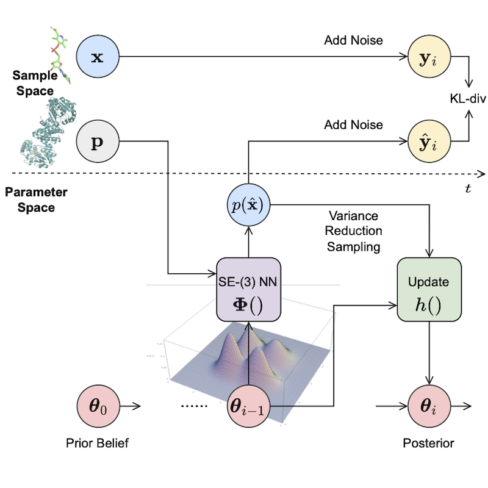
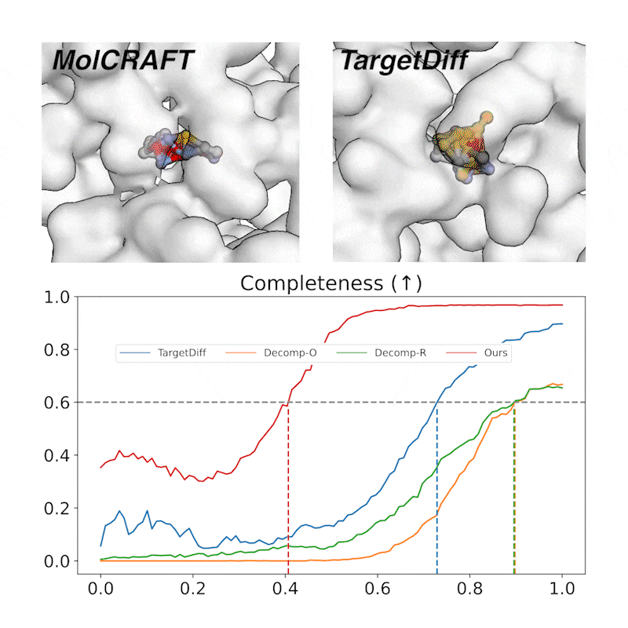

MolCRAFT architecture: continuous coordinates and discrete types are represented in a unified parameter space derived through Bayesian inference. This allows for smooth transformation toward molecular structures.
Overview
MolCRAFT series represents a concerted effort to tackle fundamental challenges in Structure-Based Drug Design (SBDD) and Structure-Based Molecule Optimization (SBMO) using advanced deep generative models and techniques. Our projects focus on accurately modeling molecular geometries, navigating hybrid continuous-discrete parameter spaces, and efficiently optimizing molecular properties against specific protein targets. Each contribution within this series introduces innovative approaches—from continuous parameter space modeling and modality-specific optimal scheduling to gradient-guided optimization—aiming to push the boundaries of generative models in drug discovery. The ultimate goal is to accelerate the design of novel therapeutic candidates by generating molecules with superior binding affinities and realistic, stable 3D conformations.
MolCRAFT: Craft Molecular Structures in Parameter Space
Unified Parameter in Structured Latent Space


Generative trajectory: the generated molecules quickly take shape and then get progressively refined, focusing the model capacity on the crucial regions. In contrast, diffusions waste much of the capacity and heavily rely on the last 1/4 steps.
Variance Reduction Sampling Strategy
The original BFN sampling (A) effectively reduces input variance by informing the neural network with the Bayesian posterior θ (distributional parameter), operating within a structured latent space instead of the high-variance sample space of noisy input y (B). We propose to directly update the parameters θi+1 from the current prediction x and prior θ0, thanks to the inherent additive accuracy property by design of the latent space. This bypasses the need for adding noise to obtain yi from predicted x, further reducing sampling variance. This strategy resembles consistency modeling and is particularly effective in SBDD, where the goal is to generate high-quality molecular structures with minimal noise and maximum fidelity.
MolPilot: Pilot MolCRAFT via Optimal Scheduling
VLB-Optimal Scheduling (VOS) Strategy
MolPilot tackles the challenge of modeling the twisted multimodal probability path in molecules—continuous 3D positions and discrete 2D topologies. We establish that in multimodal case, Variational Lower Bound (VLB) is a path integral w.r.t. multivariate noise schedule functions, which is no longer invariant to noise scheduling and makes it crucial to derive the VLB-optimal schedule for modeling the complex inter-dependencies between modalities.
VOS ensures a principled generation process by:
- designing a generalized training objective that remains invariant to all noise schedule functions, which paves the way for finding the optimal one tailored for the intertwined modalities;
- employing a dynamic programming algorithm to search for the optimal noise schedules that maximize the VLB, ensuring that the generation process is efficient and effective.

Enhanced Geometric Modeling & Interaction Fidelity
Superior Geometric Accuracy: Our VOS strategy facilitates a more harmonious and geometrically accurate co-generation of both continuous coordinates and discrete topologies, crucial for creating realistic and effective drug candidates.
High-Fidelity Molecular Structures (95%+ PB-Valid): MolPilot consistently generates molecules with high validity and maintains strong binding affinities, demonstrating its robust capability to produce plausible drug-like molecules.
MolJO: Guide MolCRAFT with Expert Preference
Gradient-Based Joint Modality Guidance
MolJO pioneers a gradient-based Structure-Based Molecule Optimization (SBMO) by operating within such continuous and differentiable latent space for multi-modalities. We further explore the update mechanism of the latent space, introducing a backward correction strategy that unifies the formulation of original BFN sampling and variance reduction strategy, offering a seamless trade-off between exploration (higher variance, discovering diverse molecular candidates but risking sample quality) and exploitation (reduced variance, fine-tuning promising ones but may not fully explore), leading to more robust and efficient optimization paths.
Practical Drug Design Scenarios
MolJO is a versatile optimization framework that has been extended to a wide range of practical settings, and achieves state-of-the-art performance in practical optimization tasks, including multi-objective and constrained optimization for R-group redesign, scaffold hopping, etc.
BibTeX Citations
If you use any part of the MolCRAFT series in your research, please cite the respective papers:
MolCRAFT
@inproceedings{qu2024molcraft,
title={MolCRAFT: Structure-Based Drug Design in Continuous Parameter Space},
author={Qu, Yanru and Qiu, Keyue and Song, Yuxuan and Gong, Jingjing and Han, Jiawei and Zheng, Mingyue and Zhou, Hao and Ma, Wei-Ying},
booktitle={International Conference on Machine Learning (ICML)},
year={2024},
}MolPilot
@inproceedings{qiu2025molpilot,
title={Piloting Structure-Based Drug Design via Modality-Specific Optimal Schedule},
author={Qiu, Keyue and Song, Yuxuan and Fan, Zhehuan and Liu, Peidong and Zhang, Zhe and Zheng, Mingyue and Zhou, Hao and Ma, Wei-Ying},
booktitle={International Conference on Machine Learning (ICML)},
year={2025},
}MolJO
@inproceedings{qiu2025moljo,
title={Empower Structure-Based Molecule Optimization with Gradient Guidance},
author={Qiu, Keyue and Song, Yuxuan and Yu, Jie and Ma, Hongbo and Cao, Ziyao and Zhang, Zhilong and Wu, Yushuai and Zheng, Mingyue and Zhou, Hao and Ma, Wei-Ying},
booktitle={International Conference on Machine Learning (ICML)},
year={2025},
}